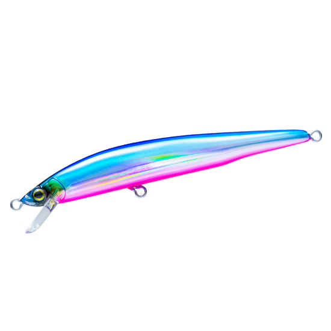
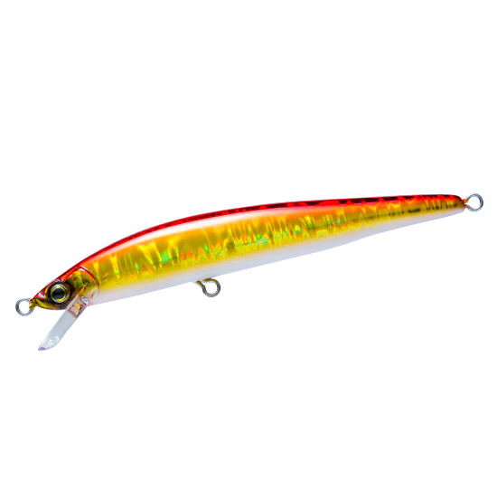
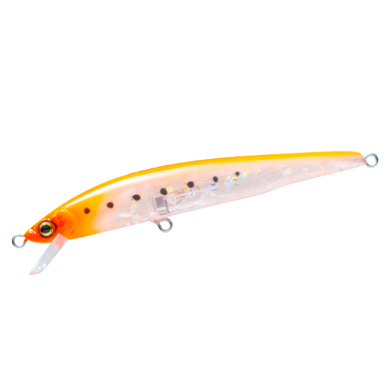
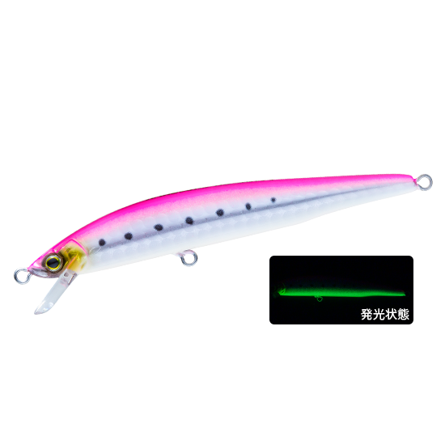
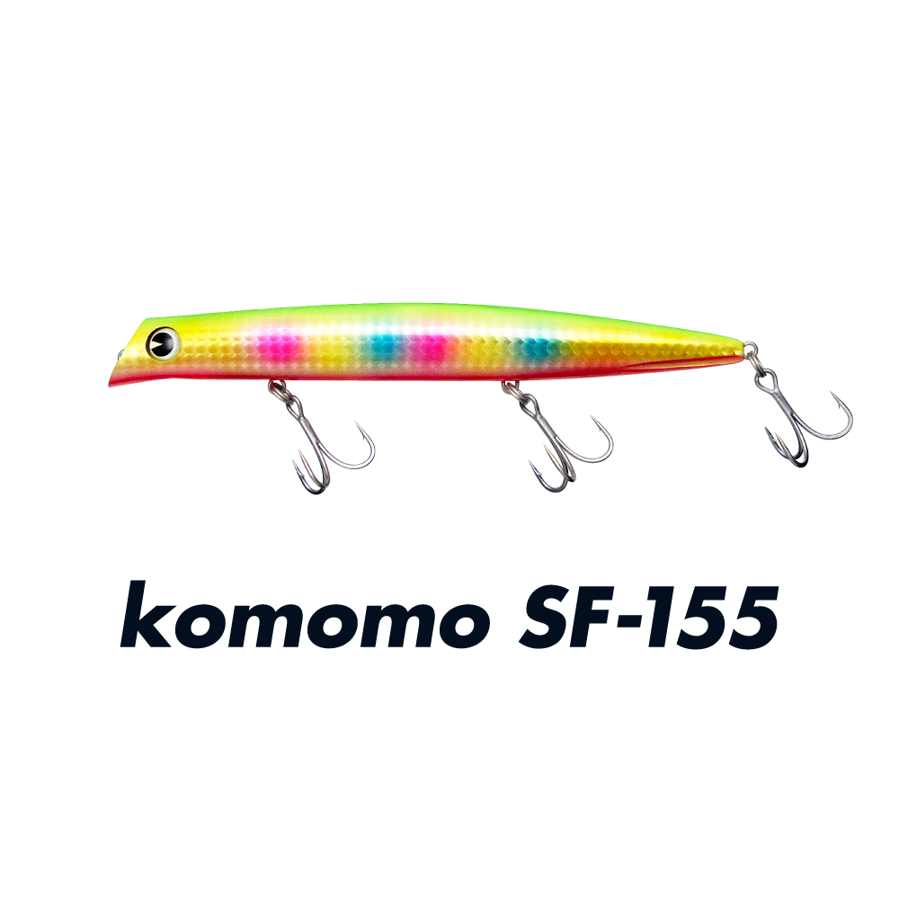

ハードコア R15
（HARDCORE R15）
更新日：2026年11月3日
ハードコア R15（HARDCORE R15）はDUEL（デュエル）のフローティングミノーです。
浅いレンジをロール主体の動きで攻める、喰わせ特化の「Rシリーズ」の150mmモデル。R15は存在感を出しつつ、シルエットは細く見せたい場面に効くシリーズ最大サイズ。スリムボディながら最大60mの飛距離で、港湾だけでなくサーフや磯も攻略できます。

画像出典:DUEL公式HP
スペック
- メーカー
- DUEL（デュエル）
- タイプ
- フローティングミノー
- 全長
- 150mm
- 自重
- 20g
- フック
- #4（3フック）
- リング
- #4
- 飛距離
- MAX 60m
- レンジ
- 20〜60cm
- ターゲット
- シーバス・サワラ（サゴシ）・ヒラスズキ
- 価格
- オープン価格
- 発売
- 2026年
▼今すぐチェック

ハードコア R15の特徴
細身×ロールで魚に違和感を与えない、喰わせ特化のスリムミノー
-
遠投と安定を両立するニューマグネット重心移動システム
キャスト時はウェイトがボディの最後尾まで移動して飛距離を生み、スイム時は腹部の強力マグネットとウェイトホールドカップで固定して泳ぎを安定させる。
-
不要なラトル音を抑えるウェイトホールドカップ
重心移動球の遊びを抑えてアクションのレスポンスを高めるパーツ。不要なラトル音もなくなり、よりナチュラルに近づける。
-
パワーファイトに対応する3フック・#4フック
3フック仕様に#4フックを組み合わせ、パワーファイトにも対応する。大型魚を狙うサイズに合わせた、信頼性の高い組み合わせだ。
ハードコア R15の使い方
基本はただ巻き。最大60mの飛距離を活かして広く探り、スローからファストまで速さを変えるのがコツです。サーフや磯では、流れや波に負けない速さを探りましょう。
ハードコア R15の得意な状況
サーフや磯など、広いエリアを探りたい場面が最大の出番です。
大きなベイトを意識しつつ、細いシルエットで見せたい時にも向いています。
20gで遠くまで届くので、沖の魚まで釣れるチャンスを広げられる1本です。
ワンポイント
全長150mmで存在感があるので、ベイトが大きい日や、ヒラスズキ狙いの荒れた海で試してみましょう。ベイトが小さい日は、R13やR11に落とすと合わせやすくなります。
ハードコア Rシリーズの使い分け
| モデル | 全長／自重 | 得意な場面 |
|---|---|---|
| R7 | 70mm／4.5g | シリーズ最小。極小ベイトとスレた魚に。チヌ狙いにも |
| R9 | 90mm／6g | 港湾や河川で使えるスタンダードサイズ |
| R11 | 110mm／9g | 喰わせとアピールのバランスが良い万能サイズ |
| R13 | 130mm／13g | 遠くのポイントやボイル撃ちに。3フック仕様 |
| R15 | 150mm／20g | シリーズ最大。サーフや磯など広いエリアに（本記事のモデル） |
5サイズとも同じカラーの全10色展開です。ベイトの大きさと、必要な飛距離で選びましょう。
人気カラー
ハードコア R15は全10色展開。人気カラーを紹介します。

ブルピン外洋の定番、ブルーとピンクの配色。イワシ系ではアピールが足りない時に。

アカキン朝夕のマズメや、砂が舞うサーフに強いカラー。常夜灯周りのナイトゲームでも活躍する。

ゴーストオレンジ鮮やかなオレンジとクリアボディの組み合わせ。時化やローライトでも広くアピールでき、アングラーからも見やすい。

ピンクグローイワシベリーがグローで、低光量にも強いカラー。ランガンで最初に投げるパイロットカラーに。
画像出典:DUEL公式HP
ハードコア R15に似ているルアー
-
 ハードコア R13
デュエル
詳細はこちら＞
ハードコア R13
デュエル
詳細はこちら＞
同じシリーズの130mm・13g。もう少し軽く、シルエットを抑えたい時に。
-

コモモSF-155 ima 詳細はこちら＞全長155mm・自重25gのシャローランナー。近いサイズで、シャローを広く探る定番として比べたい。
-
 ブローウィン125Fスリム
ブルーブルー
詳細はこちら＞
ブローウィン125Fスリム
ブルーブルー
詳細はこちら＞
全長125mm・自重14gのフローティングミノー。シーバス・ヒラスズキ狙いで、細身のシルエットが共通する。